The Hardware portal
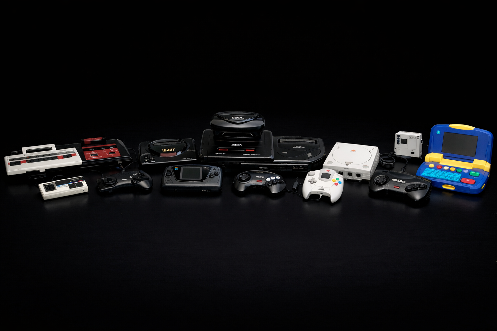
Innovations, curiosities, and other oddities
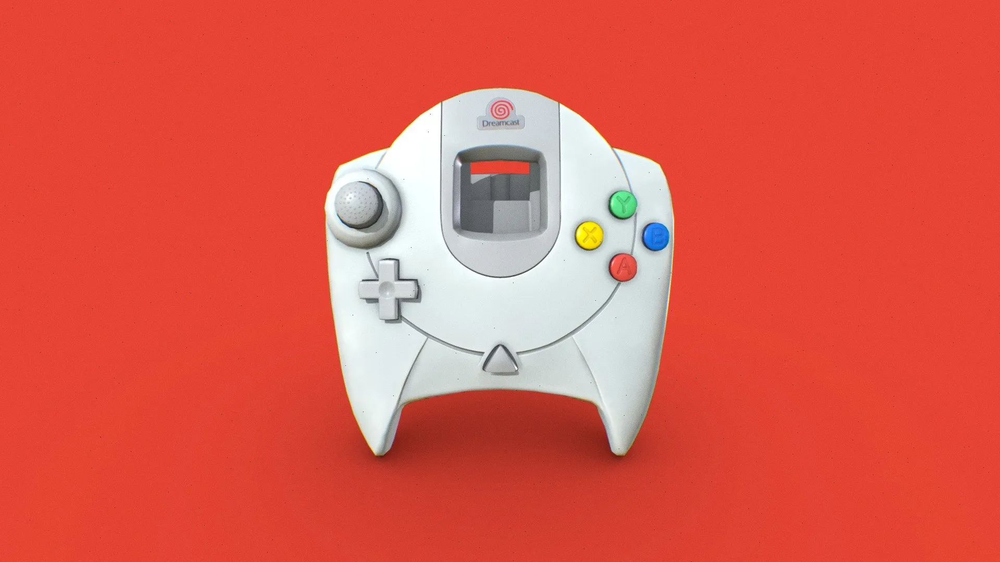
Control Geometry
From the 3-button classic to the Dreamcast's ergonomic design. The Dreamcast controller's geometry was so forward-thinking that its DNA (the triggers, the stick placement, and the face button layout) became the direct blueprint for the original Xbox controller just a few years later.
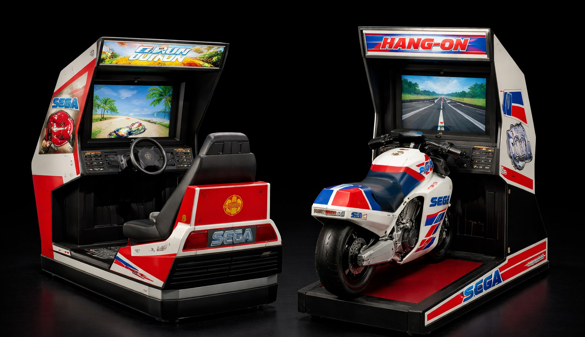
Arcade DNA
Every Sega console was a bridge to the arcade experience. Building on the evolution of Sega’s hardware, the shift from the 16-bit era to the Dreamcast was driven by the company’s core philosophy: bringing the "Arcade Experience" into the home.
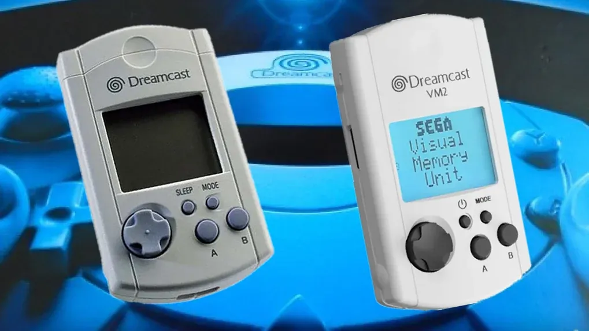
The Dreamcast VMU
The Visual Memory Unit is one of the most iconic pieces of hardware from the Dreamcast era. The VMU provided a private second screen for the player. While plugged into the Dreamcast controller, the 48x32 pixel monochrome LCD sat right in your line of sight. In games like Resident Evil Code: Veronica, your health and ammo were displayed on the VMU so the main TV screen stayed cinematic.
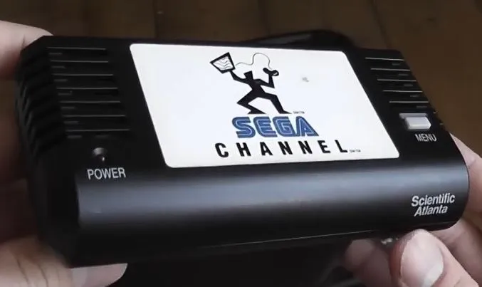
Sega Channel
Before Netflix, before Xbox Live, and decades before cloud gaming was a buzzword, Sega launched the Sega Channel in 1994. It was a "Games on Demand" service that delivered games to your console via cable television lines. You plugged a large, specialized cartridge into your Genesis, connected a coaxial cable to it, and could download a rotating library of 50 games every month.
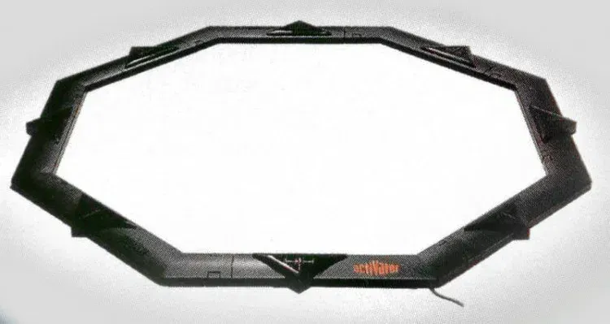
The Sega Activator (Genesis/Mega Drive)
If the VMU was Sega's take on a second screen, the Activator (1993) was their attempt at full-body motion control—long before the Wii or Kinect. It was an octagonal ring that sat on the floor. It used infrared beams to track your movements; when you broke a beam with your hand or foot, it translated that into a button press on the controller.
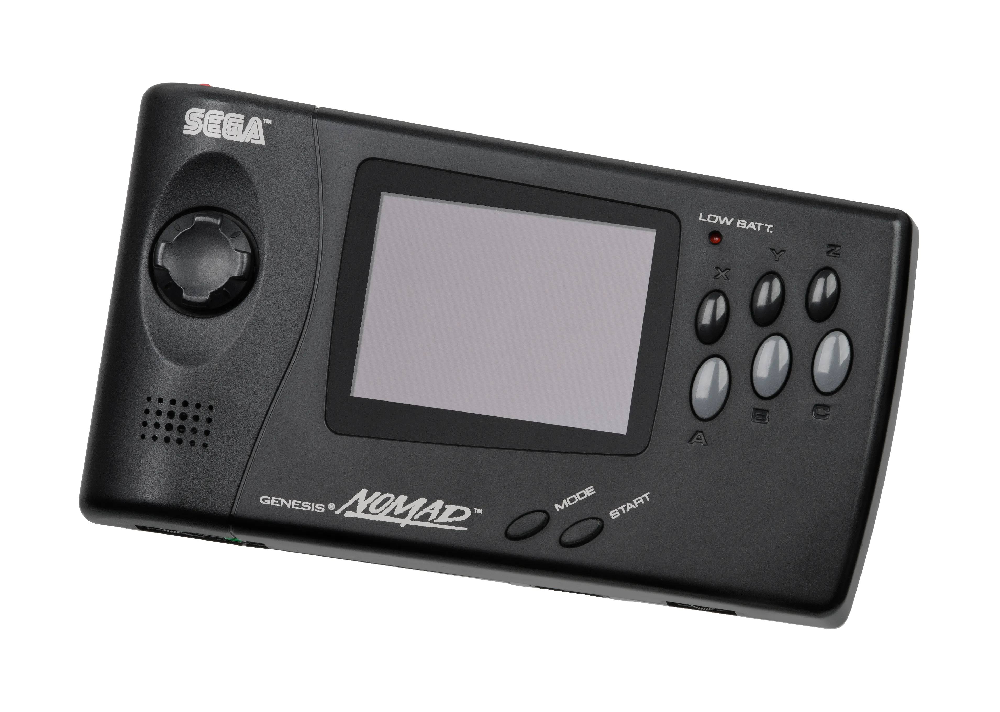
The Sega Nomad (Handheld)
Released in 1995, the Nomad was a feat of pure hardware "brute force." It wasn't a portable version of the Genesis, it was a Genesis. It featured a full-sized cartridge slot that played the exact same games you had on your home console.
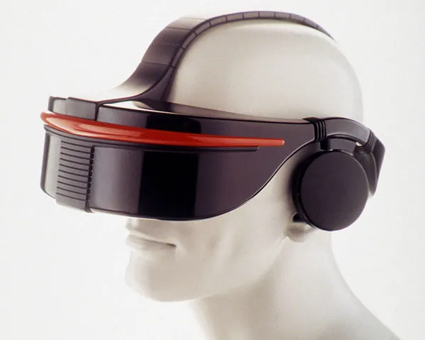
Sega VR (1993)
Long before the Oculus Rift or PlayStation VR, Sega developed a fully functional virtual reality headset for the Genesis (Mega Drive). It featured built-in LCD screens and high-tech inertial sensors for head-tracking. It was designed to track your head movements in 360 degrees, allowing you to "look around" 16-bit worlds. It was famously cancelled right before launch. Sega officially claimed it was "too realistic" and users might move and hurt themselves, but the reality was that the low frame rate and lag caused immediate motion sickness and migraines in testers. It remains one of the great "what-ifs" of 90s gaming.
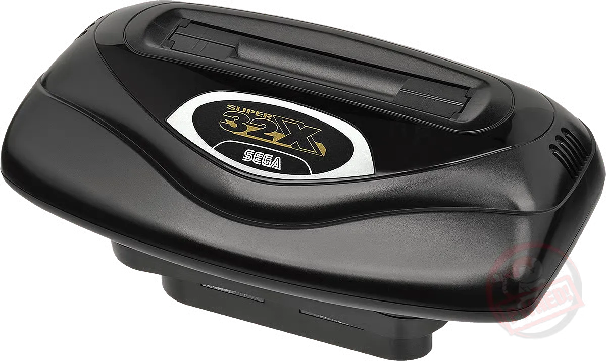
The Sega 32X (The "Mushroom")
In 1994, instead of just releasing a new console, Sega tried to turn their 16-bit Genesis into a 32-bit powerhouse via an "add-on" that sat in the cartridge slot. It added two 32-bit RISC processors to the aging Genesis hardware, allowing for impressive ports of games like Virtua Fighter and Star Wars Arcade. It created a "cable nightmare." To use it, you needed a special bridge cable to link the video signals, and most notoriously, it required its own separate power brick. If you had the full "Sega Tower of Power" (Genesis + Sega CD + 32X), you needed three separate wall outlets just to turn the machine on.
The Sega Collection (1985 - 2003)
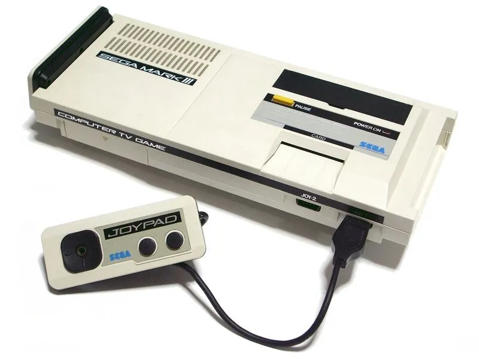
Sega Mark III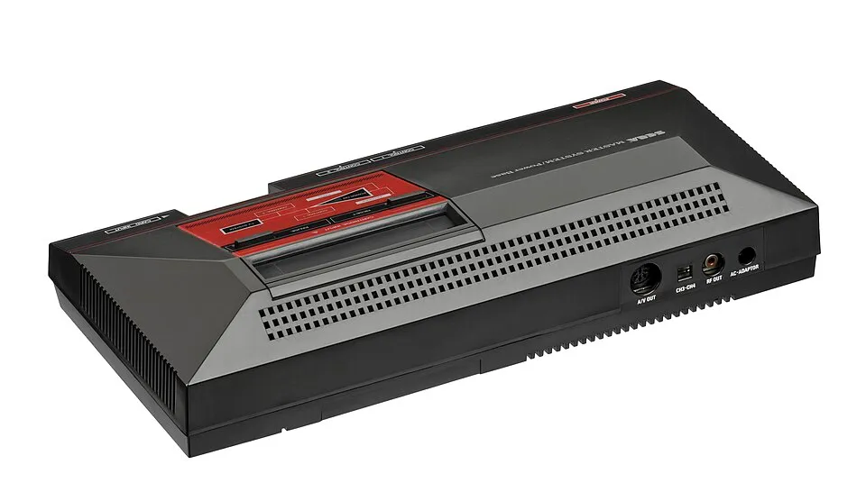
Master System Mega Drive
Mega Drive
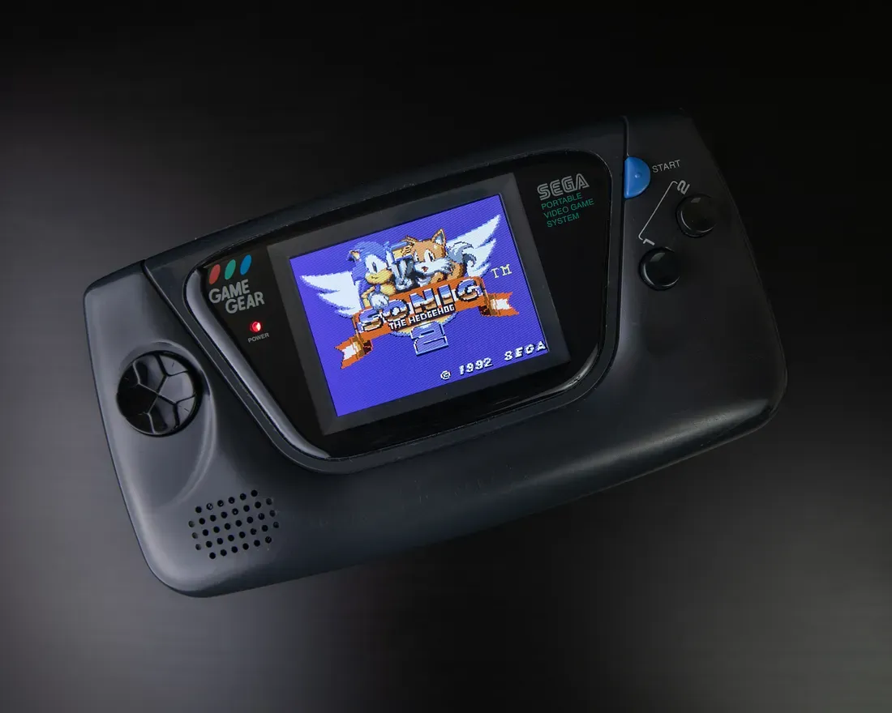
Game Gear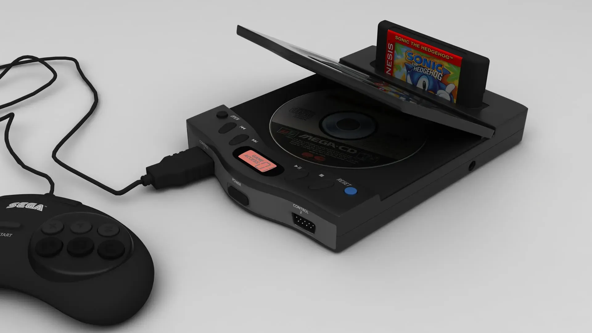
Sega CD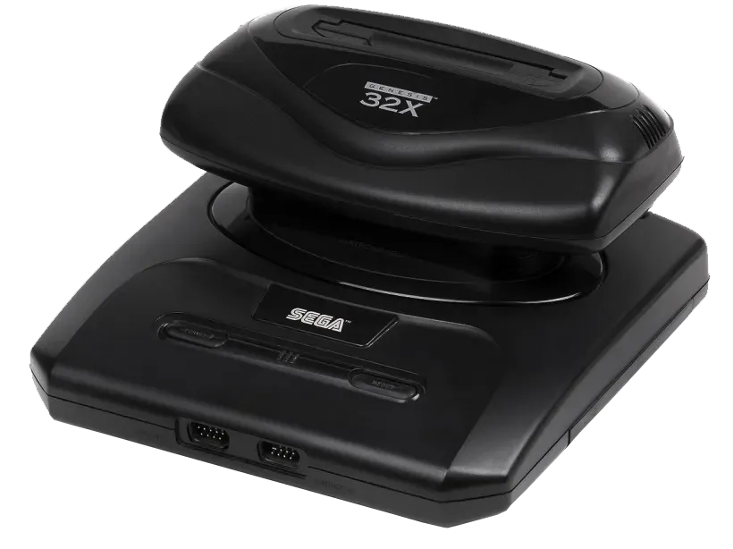
Sega 32X Sega Saturn
Sega Saturn
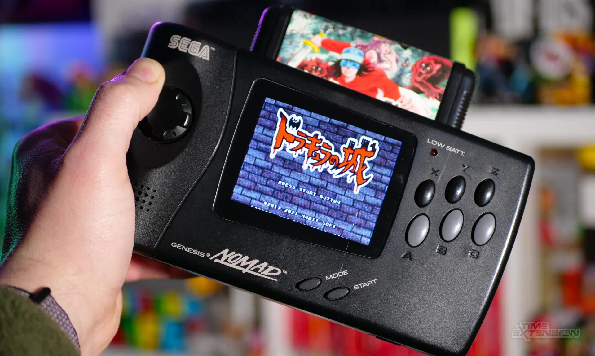
Sega Nomad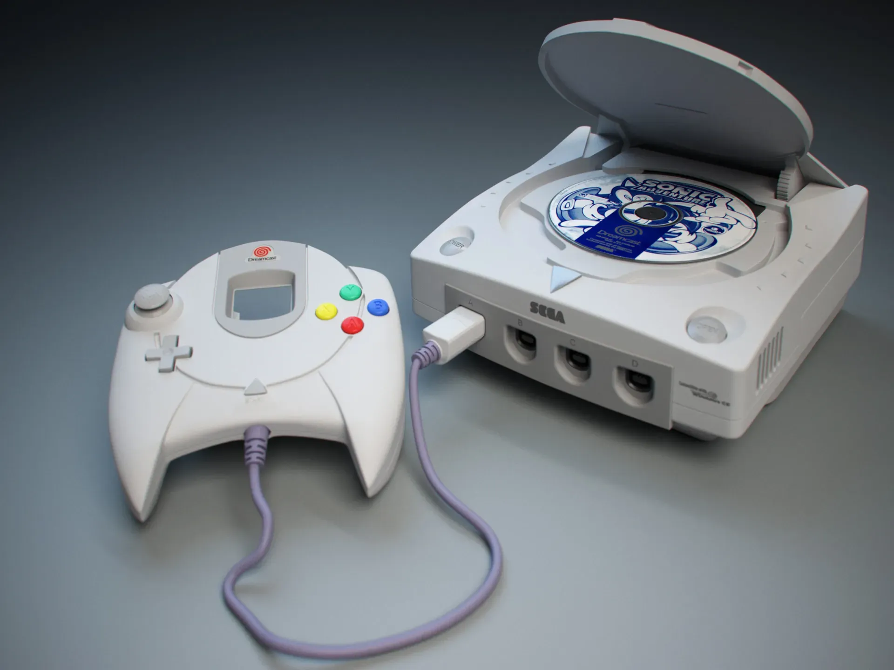
Dreamcast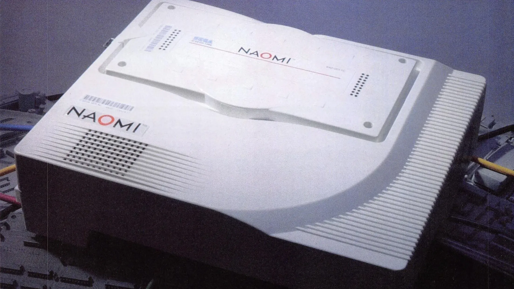
Sega NAOMI